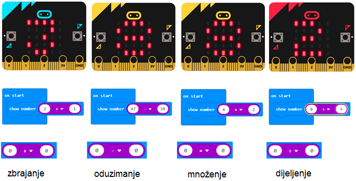
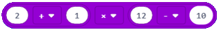
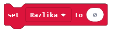
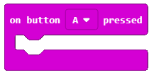
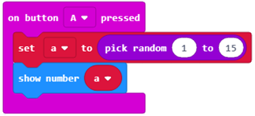

Rad s blokovima iz kategorija Math i Variables¶
MakeCode podržava četiri osnovne aritmetičke operacije: - zbrajanje ( + ), - oduzimanje ( - ), - množenje ( * ) i - dijeljenje ( / ).
Blokovi koji omogućuju računanje nazivaju se aritmetičkim operatorima. Oni su u kategoriji .
Aritmetički operatori vraćaju BROJ (rezultat aritmetičke operacije).
Rezultat (broj) koji je vratio aritmetički operator možete koristiti kao ulaznu vrijednost za blokove koji prihvaćaju brojeve. To se jasno vidi na gornjoj slici. Blok prikazivanja broja … prihvaća broj kao ulaz i prikazuje ga na zaslonu.
Pred vas stavljamo složeniji aritmetički izraz: ( 2 + 1 ) * ( 12 - 10 ). U MakeCode-u izračunavanje njegovog rezultata može izgledati ovako:
Analizirajući složeni izraz, zaključujemo da se sastoji od manjih jedinica - međupredmetnih rezultata.
Zbroj brojeva (2 + 1) jedan je posredni rezultat. Razlika u brojevima (12-10) je drugi posredni rezultat. Množenjem zbroja i razlike (zbroj * razlike) dobivamo rezultat cijelog izraza.
U programiranju je prikladno koristiti srednje vrijednosti, koje se nazivaju i varijable. Na varijable možete razmišljati kao na prostore u memoriji računala, slično kao u kutijama gdje su pohranjeni posredni rezultati. Varijable imaju svoja imena.
Kad u programu želite koristiti vrijednost varijable, dovoljno je navesti njeno ime.
U MakeCodeu stvarate varijable u kategoriji .
Da biste stvorili varijablu, u kategoriji Varijable (1) kliknite gumb Make a variable (2) i u polje unesite naziv varijable (3), u našem slučaju Counter. Klikom na gumb OK (4).

Jasno je da naš (2 + 1) * (12 - 10) izraz možete predstaviti različito. Stvaranjem dvije varijable: i .
Postavljamo početnu vrijednost varijable Brojač na nulu. To se može učiniti povlačenjem bloka  iz kategorije u blok  .
.
Konačni izgled koda:

- 2.
- Odgovor je točan!
- 10.
- Odgovor nije točan!
- 4.
- Odgovor nije točan!
Q-11: Napravite program koji sadrži dvije varijable: x i y. Dodijelite varijabli x vrijednosti 2 (x = 2) i varijabli y do 4 (y = 4). Kad program izvrši blok prikazan na slici, rezultat će biti:
Koristimo aritmetičke operatore i varijable za izradu programa za izračunavanje veličine i površine kvadrata.
Da bismo izračunali površinu kvadrata, moramo definirati dimenziju stranice a, čija će se vrijednost nasumično mijenjati, svaki put kada korisnik pritisne gumb A, a kad pritisne gumb B izračunava se glasnoća i površina.
Na samom početku potrebno je stvoriti varijable a, P and A, koje zauzvrat predstavljaju stranicu, opseg i područje kvadrata.
Definirat ćemo slučajnu promjenu vrijednosti varijable pomoću bloka  .
.
Izgled koda kada je definirana i dodijeljena početna vrijednost varijable a u blok :

Da bismo vidjeli koja je vrijednost duljine stranice a, možemo povući blok zaslona  .
.
Izgled bloka:
Da bismo izračunali opseg i površinu kvadrata, moramo se podsjetiti da je opseg kvadrata 4 * duljina stranice (4*a) i da je površina proizvoda duljina stranica (a*a). Za izračun koristimo operaciju množenja. Izgled bloka za izračunavanje veličine i površine kvadrata je:
Da bismo testirali program, pokrećemo ga u simulatoru klikom na gumb  .
.
- Bilo koja vrijednost iz intervala od 0 do 15, isključujući 0.
- Odgovor nije točan!
- Bilo koja vrijednost od intervala 0 do 15, uključujući te vrijednosti.
- Odgovor je točan!
- Svaka vrijednost od intervala 0 do 15, isključujući 15.
- Odgovor nije točan!
Q-12: Pažljivo proučite blok:

Koliku će vrijednost varijabla Brojač imati kada se napravi pokret (shake)?